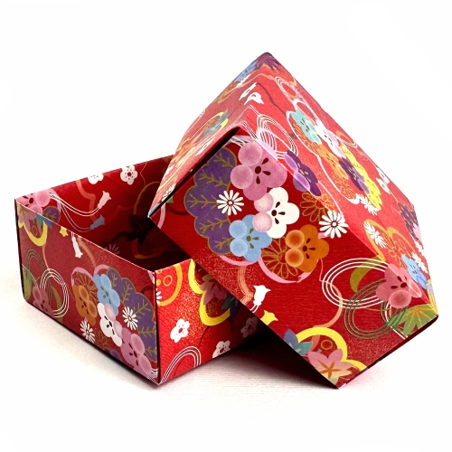
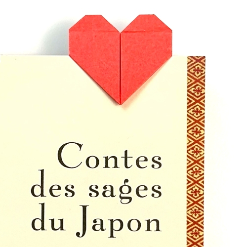

Paper Crane

Paper Box

Paper Penguin

Paper Heart Bookmark
Origami for kids focuses on simple, fun, and creative paper designs that help children develop patience, focus, and hand-eye coordination. These beginner-friendly models are easy to follow and require only basic folding techniques, making origami an enjoyable learning activity. Through these designs, kids can explore creativity while improving their problem-solving skills in a playful way.
Paper Crane
Paper Box
Paper Penguin
Paper Heart Bookmark